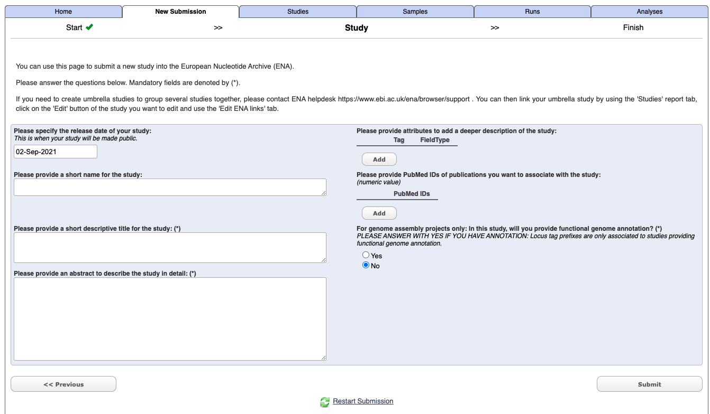

Repositories
Sequence data in repositories
Resources related to uploading sequences to repositories
For publication many journals now have a mandatory requirement that you upload your data to public repositories.
For genomics the main repositories are the National Centre for Biotechnology Information and European Nucleotide Archive.
üîó Useful resources
- TriTrypDB - kinetoplastid genomics resource
- VectorBase - bioinformatics resource for invertebrate vectors of human pathogens
- CryptoDB - Cryptosporidium genomics resource
- Silva - high quality ribosomal RNA databases. SILVA provides comprehensive, quality checked and regularly updated datasets of aligned small (16S/18S, SSU) and large subunit (23S/28S, LSU) ribosomal RNA (rRNA) sequences for all three domains of life (Bacteria, Archaea and Eukarya).
- Greengenes - 16S rRNA gene database of Bacteria and Archaea.
- EuPathDB - Eukaryotic pathogen database resource
- unite - communication and identification of DNA based fungal species (based on internal transcribed spacer gene - ITS)
- BoldSystems - The Barcode of Life Data System is designed to support the generation and application of DNA barcode data. Includes the following: Animal identification using mitochondrial mitochondrial cytochrome oxidase subunit 1 (COI); Fungal using internal transcribed spacer (ITS); and Plant using chloroplast ribulose-bisphosphate carboxylase (RbcL) & plastid/nuclear Maturase K (Matk)
- VEuPathDB - This NIH Bioinformatics Resource Center (BRC) will support the integration of parasite resources currently provided by EuPathDB.org, fungal resources provided by FungiDB.org, and vector resources provided by VectorBase.org.
Uploading high-throughput sequencing data to ENA
while I have uploaded high-throughput data to NCBI SRA in the past I have since found it not very user friendly. As such I have switched to the ENA for submission of sequence data.
This documentation is works for me and is not extensive, it is meant to be a streamlined version of the information contained within the extensive information available at ENA: Guidelines and Tutorials.
For submitting data there are a number of options and this is written from a mac user.
See submission page here
I use a combination of the following options:
- ‘Submit to ENA Interactively’ - Submit to ENA with Webin Interactive
- ‘Webin Submission Portal’ - Monitor progress of your submissions to eNA
1. Register project
Go to the Webin interface - i.e. select the ‘Submit to ENA Interactively’(https://www.ebi.ac.uk/ena/submit/sra/#home) option from the submission home page.
Under the New submission tab select Register study (Project) [Register your Study to begin data submission to ENA], and press next
Enter your study details - not you do not need to include Tags or a PudMed Id at this stage.

Select submit.
Once it has completed you should get an email which will include a project/study accession number e.g. PRJXXXXXX. It will also now appears under the Studies tab in the Webin interface.
2. Register samples
Under the New submission tab select Register samples [Register Samples to give context to your data], and press next
To begin with use the Start building your submission option to generate a sample sheet. Select the Select Checklist option open more details.
If you are unsure on which option is right for your generally for a lot of metabarcoding studies (e.g. bacteria 16S microbiome, 18S eukaryote etc) related to some “host” (either vertebrate or invertebrate) then choose the following:
Select the checklist and press next.
You can then customise and add in additional fields
Select the download template option and then complete the spreadsheet. The downloaded file with have a name like: data-2362730139549190230.tsv. When you open the file it will have a header similar to the following:
#checklist_accession
#unique_name_prefix
#sample_alias
#template
#unitsYou start entering your sample information on line 6, and some notes on headers for the GSC MIxS host associated option:
sample_alias- your sequence IDtax_id- You can find your taxonomy ID from the NCBI taxonomy databasescientific_name- Your scientific name must be at the species level. Tips for working with environmental samples are herecommon_name- Free textsample_title- Free textsample_description- Free textproject name- Free text, I use the project name I entered in the corresponding project registrationsequencing method-investigation type- e.g. mimarks-surveycollection date- acceptable formats include YYYY-MM-DD or YYYYgeographic location (country and/or sea)- Must match the country names as they appear in the ENA data base. e.g. “Australia”geographic location (latitude)- DD format e.g. -33.69geographic location (longitude)- DD format e.g. 151.25host-associated environmental package- e.g. host-associatedenvironment (biome)- Australian biomesenvironment (feature)- e.g. animal-associated habitatenvironment (material)- free text e.g. Blood
You will then have to use to Previous button to navigate back to the stage where you can upload the sample sheet.
file extension must be
.tsvot.txt
3. Upload sequence files
I have the easiest and quickest way to do this for large data is to to use the command line.
Details on Uploading Files Using Command Line FTP Client
But put simply:
- Open the terminal and navigate to the directory where the raw sequence files are.
- Type
lftp webin2.ebi.ac.uk -u Webin-xxxxx, filling in your Webin username and enter your Webin password when prompted. Type ls command to check the content of your directory (check your in the correct directory) - Use
mput <filename>command to upload files. For bulk upload of zipped fastq files (i.e. ending in.fastq.gz) simply typemput *.fastq.gz - Once it has complete use
byecommand to exit the ftp client.
4. Run analysis
This will link your uploaded sequence files to their corresponding sample and project identifiers.
You must already have completed the following:
- Register Project
- Register Samples
- Upload the raw sequence files
From the Webin submission page under the New Submission tab select Submit sequence reads and experiments [We recommend that Fastq, BAM, and CRAM read files are submitted using Webin-CLI]. Press next.
Select the project which you want to associate the run/experiment to. Note you can only select one project at a time.
It will then prompt you for sample information. However hopefully you have alreayd done this so select the Skip option in the bottom right hand corner.
Select your sequence file format e.g. CRAM, BAM, One Fastq file, Two Fastq files etc.
Then select the Download Spreadsheet option and complete the file with some tips below. The downloaded file with have a name like: experiment_paired_fastq_spreadsheet.tsv
Then Upload Completed Spreadsheet and once it has checked for errors, press the Submit button.
Notes for the experiment spreadsheet
md5 generation
To generate the md5 file you can use terminal and simple execute:
md5 <file-name>
For bulk execution you can use:
md5 *.fastq.gz which will generate something like this:
md5 example.fastq.gz
90fb727a1889a9e2194d838514beef19Spreadsheet headers
Some tips here aimed at generation of paired-end sequence data:
project_accession- this comes from when you first registered the project e.g.PRJXXXXXproject_alias- you can leave this blankexperiment_alias- a sequential ID for each sample e.g. for first sample ena-EXPERIMENT-INSTITUTION-DD-MM-YYYY-HH:MM:SS:XXX-1run_alias- a sequential ID for each sample e.g. for first sample ena-RUN-INSTITUTION-DD-MM-YYYY-HH:MM:SS:XXX-1library_name- your identifier for library namelibrary_source- e.g. GENOMIClibrary_selection- e.g. PCRlibrary_strategy- e.g. AMPLICONdesign_description- brief description of librarylibrary_construction_protocol- brief description of library construction such as kit e.g. Nextera XT DNAinstrument_model- e.g. Illumina MiSeqfile_typee.g. fastqlibrary_layoutSINGLE OR PAIREDinsert_size- numbers only in basepairs or nucleotide e.g. for 300 bp = 300forward_file_name- sample-id-R1.fastq.gzforward_file_md5- e.g. 90fb727a1889a9e2194d838514beef19forward_file_unencrypted_md5- can leave blankreverse_file_name- sample-id-R2.fastq.gzreverse_file_md5- e.g. 90fb727a1889a9e2194d838514beef19reverse_file_unencrypted_md5- can leave blank
file extension must be
.tsvor.csv